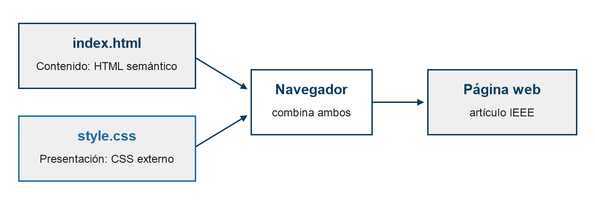

Separación de contenido y presentación en una página web con HTML semántico y CSS básico
Ricardo Daniel García Pocasangre
Técnico en Desarrollo de software, Universidad Centroamericana José Simeón Cañas
00032226@uca.edu.sv
Resumen
La separación entre contenido y presentación es un principio básico del desarrollo web que facilita el mantenimiento y la legibilidad de los documentos. Este artículo describe la construcción de un artículo con formato IEEE a una columna mediante HTML semántico y una hoja de estilos externa con CSS básico. Se detalla el procedimiento seguido y se cuantifican los selectores empleados. Los resultados muestran que la presentación completa se obtiene con veinticuatro reglas, sin atributos de estilo en línea ni técnicas avanzadas de maquetación. Se concluye que el CSS básico basta para un documento legible y se recomienda incorporar pruebas de accesibilidad.
Palabras clave
css; html semántico; legibilidad; selectores; separación de contenido
I. Introducción
Las páginas web combinan información y reglas visuales. Cuando ambas se mezclan en un mismo archivo, el documento se vuelve difícil de mantener y de reutilizar [1]. Por ello se recomienda describir el significado del contenido con HTML y delegar el aspecto a una hoja de estilos externa. El objetivo de este trabajo es construir un artículo académico en formato IEEE a una columna que aplique esta separación, utilizando únicamente HTML semántico y CSS básico.
II. Marco teórico
El HTML semántico emplea etiquetas como header, section y footer para indicar la función de cada bloque y no su apariencia [2]. CSS, por su parte, asigna tipografía, color y espaciado mediante selectores [3].
Selectores empleados
En este trabajo se emplearon tres tipos:
- Selectores de etiqueta, que afectan a todos los elementos de un mismo tipo.
- Selectores de clase, que afectan a los elementos que declaran esa clase.
- Selectores de id, que afectan a un único elemento del documento.
El modelo de caja rodea el contenido de relleno, borde y margen, y la propiedad box-sizing hace que el ancho incluya relleno y borde [3]. Una lectura cómoda requiere además jerarquía tipográfica clara y líneas de longitud moderada [4].
III. Metodología o desarrollo
El trabajo se desarrolló con un editor de texto y un navegador web, siguiendo la estructura de documento recomendada para páginas introductorias [5]. Los pasos principales fueron los siguientes:
- Redacción del contenido del artículo con sus secciones I a V.
- Marcado del contenido con etiquetas semánticas en index.html.
- Escritura de style.css con reglas de tipografía, color, alineación y espaciado.
- Revisión del resultado en el navegador y corrección de diferencias frente a la especificación.
- Conteo de las reglas y de los selectores de la hoja de estilos.
La Figura 1 ilustra la relación entre los dos archivos entregados.

IV. Resultados y discusión
La Tabla I resume los selectores presentes en style.css, que contiene 24 reglas y 90 declaraciones distribuidas en 172 líneas.
| Tipo de selector | Cantidad | Ejemplo |
|---|---|---|
| Etiqueta | 12 | h2 |
| Clase | 10 | .resumen |
| Id | 1 | #articulo |
| Pseudo-clase | 1 | a:hover |
| Universal | 1 | * |
| Descendiente | 1 | .referencias li |
Predominan los selectores de etiqueta, lo que permite que gran parte del diseño dependa de la estructura semántica y no de nombres de clase. La hoja no incluye propiedades de maquetación avanzada. El alcance es limitado: los datos describen un único documento y no miden la legibilidad con lectores reales.
V. Conclusiones
Se logró un artículo de una columna cuyo contenido está marcado con HTML semántico y cuya presentación reside por completo en una hoja externa, de modo que el objetivo planteado se cumplió. El CSS básico resultó suficiente para obtener un documento legible. Como trabajo futuro se propone evaluar la accesibilidad del resultado con herramientas de validación y con lectores de pantalla.
Referencias
- [1] H. W. Lie and B. Bos, Cascading Style Sheets: Designing for the Web, 3rd ed. Boston, MA, USA: Addison-Wesley, 2005. [Online]. Available: https://www.w3.org/Style/LieBos3e/
- [2] WHATWG, "HTML Living Standard," 2026. [Online]. Available: https://html.spec.whatwg.org/
- [3] E. A. Meyer and E. Weyl, CSS: The Definitive Guide, 4th ed. Sebastopol, CA, USA: O'Reilly Media, 2017. [Online]. Available: https://books.google.com/books?vid=ISBN9781449393199
- [4] J. Nielsen, Designing Web Usability. Indianapolis, IN, USA: New Riders, 2000. [Online]. Available: https://www.nngroup.com/books/designing-web-usability/
- [5] J. Duckett, HTML and CSS: Design and Build Websites. Indianapolis, IN, USA: Wiley, 2011. [Online]. Available: https://htmlandcssbook.com/